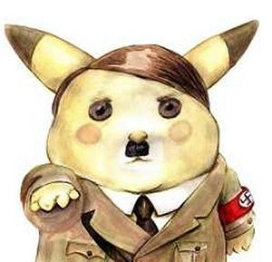
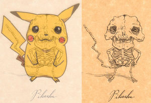
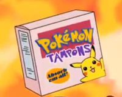

Pikachu
 De: La Frikipedia, la enciclopedia extremadamente seria.
De: La Frikipedia, la enciclopedia extremadamente seria.
| De la serie bichos dentro de bolas:
|
| Pikachu
|
|
|
| Nombre
|
Pikachu
|
| Especie
|
Wombat
|
| Apariencia
|
Rata amarilla asexuada con 2 coxones que produce adicción
|
| Hábitat natural
|
La gameboy
|
| Localización
|
Pokebola
|
| Tipo
|

|
| Habilidad
|
Ataques eléctricos
|
| Pokemonización
|
Wombat
|
| Número
|
1 (más vale que no aparezca un segundo)
|
«Si quieres crecer fuerte y sano, cómete un humano»
~ Proverbio ratonil
«Pika pika, pues ráscate»
~ Entrenador discutiendo con su pikachu
Pikachu es un ratón (electricus amorfus di rata) amorfo sobrecrecido de sexo indefinido que ha sufrido el proceso de pokemonización al recibir una descarga de 10.000 voltios y una patada en los cojones, adquiriendo un color amarillo y la facultad de almacenar electricidad estática en los coxones (no confundir con cojones ya que aunque son similares carecen de función reproductora) y con un vocabulario de 4 palabras (pika, pi, pikapi y pikachu).
Dos Pikachus
follando perreando
Su nombre proviene de dos palabras chinas: Pika y Chu, que se puede interpretar de dos formas: me pica la chucha y me pica más que la chucha. Eso es lo que pretende decir este aborto de la naturaleza. Se sospecha que es la prevolución del Lucia, un ser eléctrico que es también golpeador, y con una Piedra Rabo evoluciona a Marsupilami. Si se le da una ostia evoluciona a Wombat, pero si se es amigo de este tipo de pokémon puede que te de electricidad gratuita o una buena patada en las pelotas. Actualmente se le conoce por el nombre: "LA RATA".
Según otras fuentes esta rata es portadora de Hepatitis B, que es lo que causa ese color amarillo.
Su popularidad
Cuando estuvo en los US Navy SEALS
Además de proclamarse el dios de los Pokémon, Pikachu ha obtenido mucha popularidad estos últimos años, a pesar de que la Asociación de Padres de Familia, en convenio con la Iglesia Evangélica, han querido manchar la buena y noble imagen del carismático e inofensivo bicho, con el argumento absurdo de que es un demonio y que sus orejas en verdad son unos cuernos, que sólo busca la destrucción, y que tiene planes de conquista mundial.
Muchas se preguntan por qué es tan popular esta rata asiática, con hepatitis y una cola en forma de rayo. Porque poderoso no es, existe más fuertes, apuesto tampoco, sexy tal vez (si es que apoyas la pokefilia). Obviamente descartamos el hecho de que sea porque es el protagonista de la serie de animé Pokémon.
El motivo es porque te hipnotiza con su mirada, se apodera de ti y te convierte en su pokeesclavo, obligándote a comprar videojuegos en RPG en 2d, y hacer cosplay ridículos de el, todo parte de su maléfico plan (no se dejen engañar por su tierno cuerpo, pues, en sus ratos libres se dedica a drogarse con Sonic, además es uno de los clientes mas fieles de Kirbi).
Foto del Profesor Oak mostrando a la mamá del Pikachu de Ash. Se avergüenza de que su hijo no evolucione a
Raichu.
Sus planes de conquista mundial

|
-¿Pikachu, qué vamos a hacer esta noche?
-Lo mismo que hacemos todas las noches Pichu, tratar de conquistar el mundo!
|

|
| Clara muestra de que las ratas eran, son y serán siempre malvadas
|

Lo único que le gana a Pikachu, es Pikachu

Pikachu silvestre en su hábitat natural
Bajo esa apariencia insidiosa, de una inofensiva y pequeña ratita amarilla, vive un ser malvado que intenta conquistarnos a todos. Ya consiguió apoderarse de toda la isla de Japón y apunta a nuevas conquistas como los Estados Unidos, Latinoamérica y Europa, todo esto mediante a venta de souvernirs de muy alto precio (los cuales se venden como pan caliente) que sirven para lavar la mente a los jóvenes. También ha usado otros medios como la música, poniendo mensajes subliminales en el pokerap.
Todo esto no seria posible sin humano, por eso Pikachu controla y folla a un joven, el cual es su marioneta y esclavo sexual y hace el trabajo sucio por él. Según diversas fuentes se llamaría Ash Ketchum.
 Pikachu en sus años de gloria.
 Pikachu según los bocetos de Darwin

La verdadera identidad de Pikachu
Cría de Pikachu a los pocos días de la clonación, método reproductivo de esta especie
Datos interesantes
Pikachu: (dentro de su mente)
¡Ops!, no me disfracé.
- Es de origen judío-tanzanio-gringo.
- Es de los mayores enemigos de Eymardman y SuperRoy.
- Su madre era una rata amante del maestro Splinter que quedó preñada cuando la destripó un transformador de luz.
- Esta rata era miembro recurrente de las fuerzas del mal hasta que Planko la derrotó.
- La rata no tiene ni corazón ni pulmones, sólo estómago.
- La rata es un animal irracional, no piensa, sólo mastica.
- Donde pisa la rata no crece el musgo.
- La diferencia entre el león y la rata es que el león te puede morder, la rata te va a morder.
- Una vez al ver el dios Zeus semejante engendro decidió destruirlo lanzando uno de sus rayos, pero lo único que consiguió fue darle poderes eléctricos.
- Una vez Hércules intentó sacar a la rata de su madriguera, pero fue meter la mano y perder el brazo.
- Si la rata te mira directamente a los ojos, te mueres instantáneamente y contigo toda tu familia.
- Una vez Ash Ketchum, su ex-entrenador, estaba almorzando y la rata le dijo: Pika-Pika-Pi, que significaba "O me das de tu almuerzo o me como a tu amigo Brock".
- El perro ladra, el gato maúlla, el lobo aúlla y la rata... ruge.
- La rata puede comer mientras caga, por lo que no necesita interrumpir la ingesta
- Si por alguna razón la rata llegase a morir, reviviría en el instante en que oliese sangre humana.
- Es el personaje más poderoso del Smash Bros, y a quien lo niegue le reto a una partida a dicho juego (en Nintendo 64)
- El punto anterior no tiene sentido, porque si la rata esta muerta no puede oler.
- La mala hostia de la rata es directamente proporcional al hambre que acumula.
- Cuando la rata arquea una ceja, la suerte se agota, no toca ni la quiniela, ni el gordo de navidad. Algunas fuentes atestiguan que esta pudo ser la razón de la desaparición del calvo de la lotería.
- La rata tiene una habilidad especial para esconderse dentro de objetos: cubos de basura, jarrones, cajones, cajas de zapatos, tubos de ensayo, botellas, bolsas de plástico, cajas de música. Entre pan y pan nunca se sabe desde donde te puede pegar un buen bocao.
- La rata come electricidad... y queso... y pantorrillas humanas.
- La rata no come.
- La rata come 17 veces su peso al día.
- La rata defeca 64 veces su peso al día.
- La rata no sabe cuánto pesa.
- La rata ni sabe cuánto CAGA.
- La rata es demócrata.
- La mordida de un Pikachu adulto equivale al triple de fuerza de la de un elefante hembra apareándose y a un cuarto de su potencia ¿Por qué crees que los elefantes le temen a los ratones?
- Los Pikachus siempre dicen que les pica pero nunca se rascan.
- Es la primera rata de color amarillo.
- Es hermano de Jaume Creixell.
- El ex-ministro venezolano Raúl Baduel es su fanático número uno. Se presume que sea un nuevo tipo de enfermedad conocida como Pikachiste, medianamente contagiosa. Científicos de Birmania están investigando para ver si la pueden convertir en un arma de destrucción masiva para controlar India y Marruecos.
- Su pika-dura puede dejar embarazada a tu hermana.
- Durante su período de lactancia pueden producir hasta 1.000.000 litros de leche que después serán envasados y vendidos a escuelas de Haití.
- Si se encuentra con uno de ellos lo mejor es hacerse el estéril.
- Su bilis es aprovechada como afrodisíaco.
- Según Josue Yrion, Pikachu es el dios maligno y satánico de la reencarnación.
- Pikachu es gay
- Es la fusión de un wombat y una batería doble A
¿Sabias que...
- ...Se le vio cantando en pijama?
- ...Hace dias que no me habla por las notas estas?
- ...Voy a seguir con esto?
- ...Aunque mejor me callo?
- ...Si fueras Pikachu, habrias matado a Ash?
 También se venden útiles productos de Pikachu.
Enlaces externos
Autor(es):
- Krusher
- Nexo
- Fordus
- DonkeyG5
- Cortocircuito
- Mastro
- Hito
- Rubendevil
- MURO DE AGUAS
- Max Slug
Frikipedia 2005-2016, Licencia
GFDL 1.2 - Extraído por FrikiLeaks